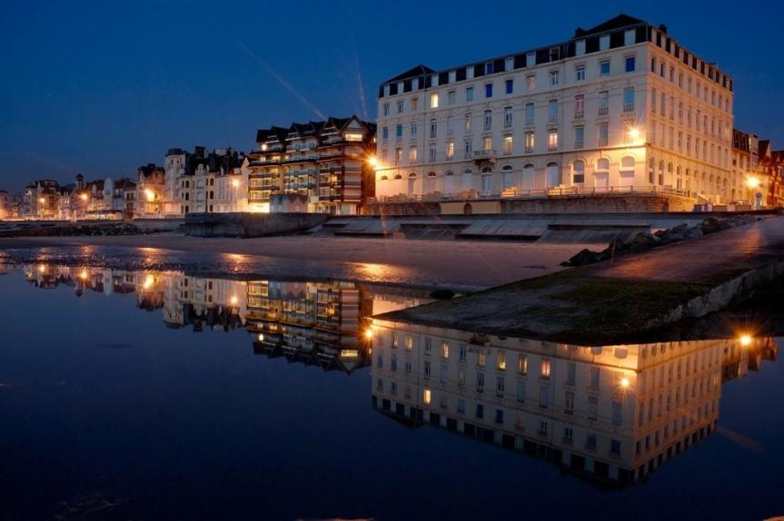
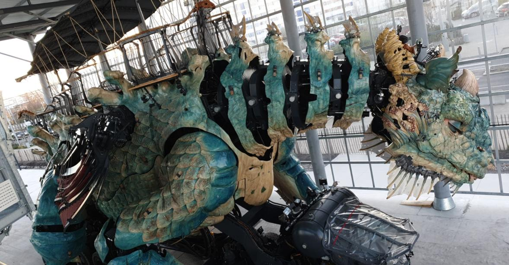

Lors de votre séjour à Wimereux dans notre gîte, Vous pourrez profiter de nombreuses activités au sein même de la ville, Dans un espace proche du votre lieu de résidence à savoir Casa Mia. En effet, le gîte étant localisé à proximité de la mer, vous pourrez avec vos proches, Profiter du calme de la plage, aller vous promener dans le sable ou encore partir en randonné dans les dunes... Vous pourrez aussi goûter au spécialités culinaires de notre région dans les nombreux restaurants proche de la mer, et du gîte.
Autour de Casa Mia, vous pourrez profiter de la ville de Wimereux du matin au soir. Venez visiter et apprendre l'histoire de notre ville, Venez profiter des nombreux magasins qu'elle propose. Aller vous balader sur la digue tout en mangeant une glace. Ou encore aller visiter le port de Wimereux ! Vous pourrez y faire des dégustations ou des achats !
Après avoir visité Wimereux, vous pouvez toujours vous rendre aux grandes villes proche de Casa Mia.Comme Calais (situé à 30kms), ville de guerre, connu pour son dragon qui se promène dans les rues et achève son périple sur la plage... Ou encore Boulogne-sur-mer (situé à 7kms), où vous pourrez rendre visite aux animaux aquatiques de Nausicaa !